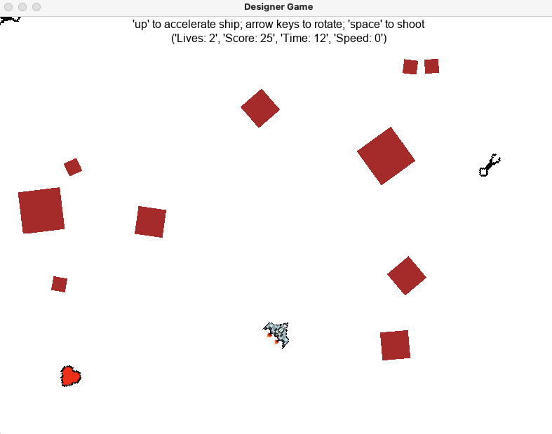

| Michael Bocelli |
Welcome to my portfolio. I am a 21 year-old computer science student, studying at the University of Delaware. I believe in blending the creative with the technical, and I hope you can discover that in my work below. |
Projects
A summary of the projects I have worked on, both academic and personal.
| Boids Simulation (3D) | |
|---|---|

|
A 3D implementation of the Boids Algorithm, performed by crows in Unity. Invented by computer graphics expert Craig Reynolds, the boids algorithm simulates the coordinated motion of animals such as a flock of birds or a school of fish. I came across the algorithm accidentally while researching the animation techniques behind a game called Shadow of the Colossus on an internet forum. After discovering it, I was motivated to implement it myself in a 3D game engine environment so I could utilize it for future projects. I also enjoyed this project as I was able to use programming concepts that I learned outside of class, such as delegates and lamda expressions. Language(s): C# Resources used:
|
| Portfolio Website | |

|
The webpage you are currently viewing, constructed from scratch. My first webpage, besides a Spongebob wiki I made for a class in 9th grade. What I enjoy most about this project is all the extra knowledge which comes as a byproduct while researching HTML and CSS. Although this is true for other projects, I have not taken a web development course, so while teaching myself the basics I come across interesting features I might not have otherwise (albeit getting sidetracked at times). Language(s): HTML | CSS | JavaScript Resources used:
|
| Asteroids | |
|  |
A recreation of the 1979 Atari classic Asteroids, made with the Designer library. This was my first final in my first computer science class in college. We had the option to choose between recreating Snake and Asteroids as our final project, both of which needed to be created from scratch. I was told that Asteroids would be the tougher choice, so of course I chose it. The library used (Designer) was created by one of our faculty's professors and was very enjoyable to work with when putting this project together. Language(s): Python Resources used:
|
3D Assets
3D Art Area
About Me
List Skills/Hobbies/Etc